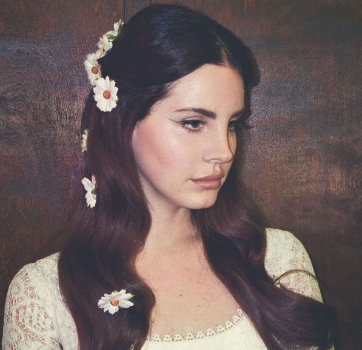
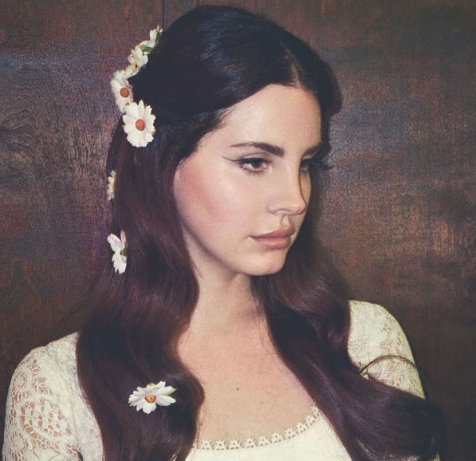
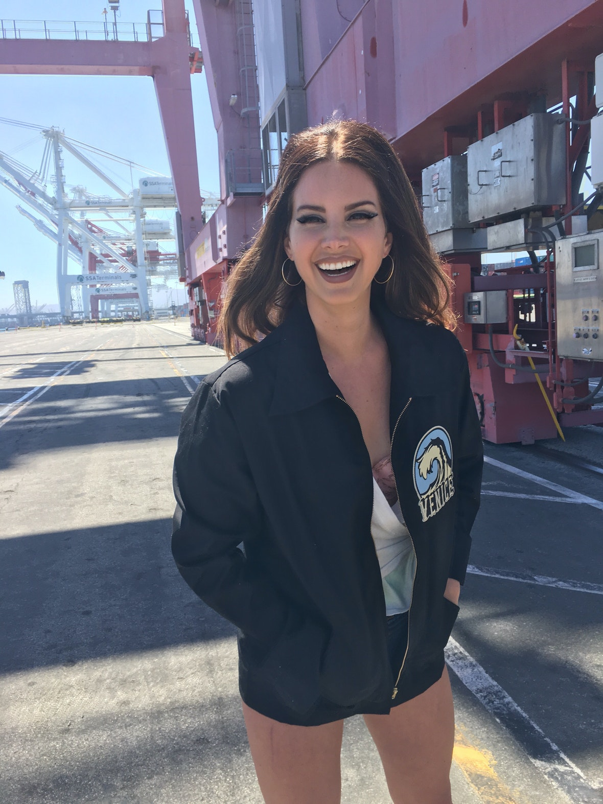
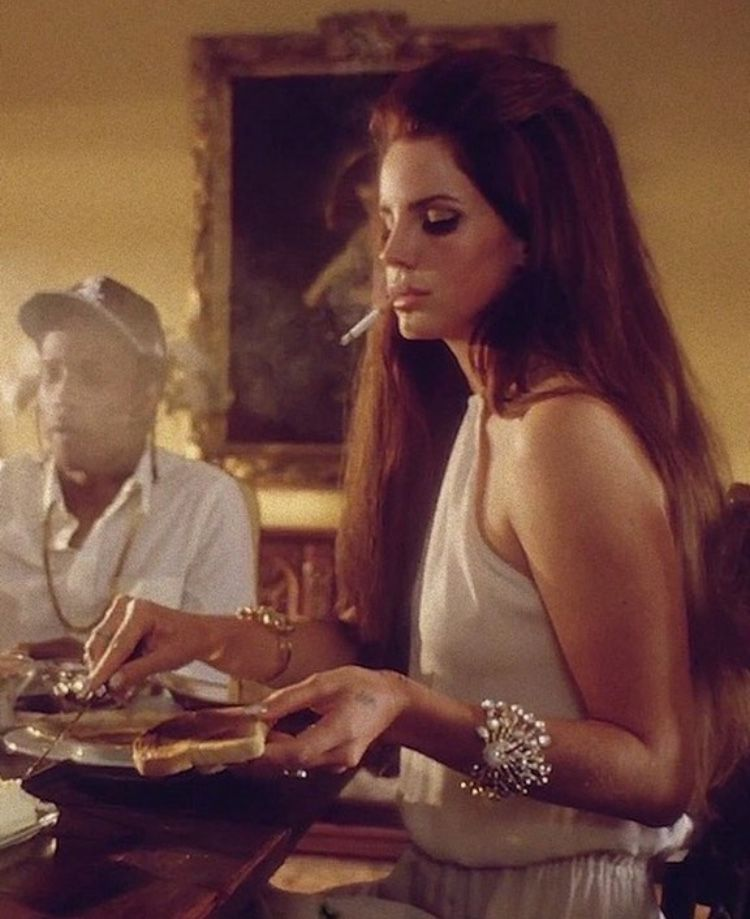

Norman F*cking Rockwell!, by Lana Del Rey
 

| Norman F*cking Rockwell: | |
|---|---|
| 1. | Norman f*cking Rockwell |
| 2. | Mariners Apartment Complex |
| 3. | Venice B*tch |
| 4. | F*ck it I love you |
| 5. | Doin' Time |
| 6. | Love song |
| 7. | Cinnamon Girl |
| 8. | How to disappear |
| 9. | California |
| 10. | The Next Best American Record |
| 11. | The greatest |
| 12. | Bartender |
| 13. | Happiness is a butterfly |
| 14. | hope is a dangerous thing for a woman like me to have |
About the Album:
Norman f*cking Rockwell is an album that is heavy, emotional, and encompasses your mind from the second it begins playing and remains in my mind long after it's finished it's last song. Lana Del Rey's music truly found me, I was sitting in a hair salon that I'd never been in before when I heard her first, Radio was the song, from her second album Born to Die. I was deep in the backwoods of the Idaho National Forest with a new love when she played Lana's 2014 album Ulraviolence, which is still a timeless favorite of mine. Between that year and the release of Norman f*cking Rockwell Lana released two other albums, Honeymoon & Lust for Life, all billboard favorites. Norman f*cking Rockwell was released late August in 2019, right after I came back from a two week backpacking/roadtrip through the western U.S. This album is a masterpiece, and compells me to love what I love deeper and stronger than I have the day before. The lyrics and melodies of this record command my heart to remain true to myself regardless of what happens around me, with friendships and relationships that may come and go, this record keeps me rooted.
About the Artist:
Elizabeth Woodridge Grant assumed the stage-name Lana Del Rey after years of stage names and a few prior EP releases. Lana grew up in New York and spent a few years in London following her college graduation. Through she hails from the big apple, Lana's music is very west-coast beach culture themed, namely in California. It took work to get started and get into the spotlight for Lana, and when she had her big break in 2011, she simply took over and flooded the scene. Lana is an influencial artist and woman who set the bar for the sadcore pop scene to a height that will be unreachable by others to surpass for years to come.
 